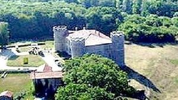
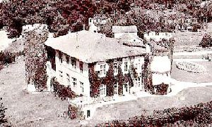
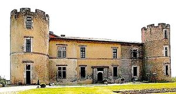
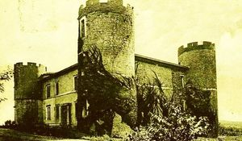
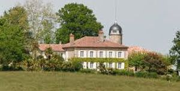
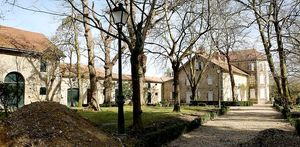
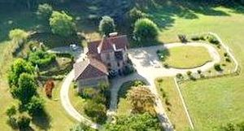

Recensement Jean-Claude Truffet
| Département | 40 — Landes |
| Canton | St-Vincent de Tyrosse |
| Commune | Saint-Martin de Hinx |
| Type d'édifice | Château |
| Période d'origine | XVI-XIX |







Quatre châteaux à St-Martin de Hinx celui de Montauze, de Pouy datant du début du XIVe siècle, de Larrat datant du XVIe siècle et la gentilhommière de Sorey construite au Moyen Âge a été restaurée dans la deuxième moitié du XXe siècle.
MONTAUZE, ancienne seigneurie de la famille Bédorède, appartenant aujourd'hui à l'état, qui en laisse la jouissance à l'INRA, le domaine de Bourg. le 2 janvier 1538, Bertrand de Bessabat rend hommage à Henri d'Albret pour la seigneurie de Montauzet. Le domaine a été vendu vers 1631 à un membre de la famille de Biaudos-Castéja puis à la famille Caillavel. Après être passé par de nombreux parents ou alliés, à la Révolution le domaine est composé outre du logis principal, de 23 métairies. La demeure actuelle a été construite ou reconstruite à la fin du XVIIIe siècle ou au début du XIXe siècle.
POUY existence d'une forteresse édifiée en ce lieu vers 1311 sans l'autorisation du roi d'Angleterre. Seigneurie des Bédorède jusqu'en 1712, ils en abandonnent la jouissance au profit des Lalande d'Olce. Henri de Lalande d'Olce en était propriétaire dans les années 1970.
LARRART Le domaine actuel a été construit dans la première moitié du XIXe siècle comme le montre le cadastre de cette époque. SOREY Au Moyen Age, la seigneurie de Sorey était dans les mains de la famille de Bessabat par ailleurs seigneurs de Montauzer dans la même commune. Elle est encore liée à cette même seigneurie en 1784.
LARRART, maison de maître : plan rectangulaire, moellons, enduit, un étage carré, un étage de comble avec lucarnes, élévation ordonnancée de 7 travées, toit à longs pans brisés couvert d'ardoise. Communs : plan rectangulaire, moellons, enduit, toit à longs pans couvert de tuile creuse, dominé par un pigeonnier dont le toit en pavillon est couvert de tuiles plates. MONTAUZE, de plan rectangulaire, 1 étage carré, moellon enduit, toit à longs pans et croupe, tuiles creuses, élévation ordonnancée 5 travées, tour ronde sur le petit côté ouest. POUY, l'édifice est en ruine au XIXe siècle, il fait l'objet d'une importante restauration au début du XXe siècle. Les éléments les plus anciens de l'édifice actuel datent de la fin du Moyen-Age, corps de logis de plan rectangulaire régulier, élévation ordonnancée, fenêtres à meneaux surtout sur l'arrière de l'édifice, des quatre grosses tours seule reste trois tours circulaires dont 2 sont crénelées dans leur intégralité. SOREY, le bâtiment existe sur le cadastre du début du XIXe siècle. Edifice construit au XVIIe siècle pour le corps de logis élevé avec croisée pendante de lucarne. Et, extension à la fin du XVIIIe siècle ou au début du XIXe siècle pour le corps de logis en appentis. Plan rectangulaire, ensemble en moellon enduit, corps de bâtiment à un étage carré et un étage en surcroît éclairé par une croisée pendante de lucarne, toit à longs pans et croupes. Et un corps de logis de 2 travées, toit en appentis.
Montauze, famille Bédorède Pouy Henri de Lalande d'Olce Sorey, famille de Bessabat
"
Château de Montauzé grav 5, 43° 35' 29 nord, 1° 16' 32 ouest, de Pouy grav fde 1 à 4, 43° 35' 16 nord, 1° 14' 56 ouest, de Larrart et la gentilhommière de Sorey à Saint-Martin d'Hinx